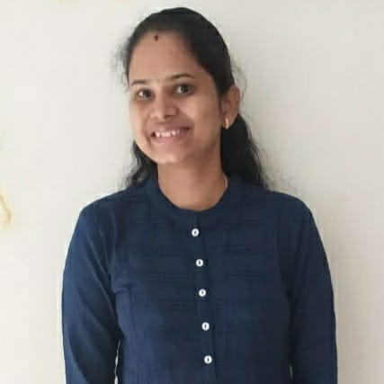
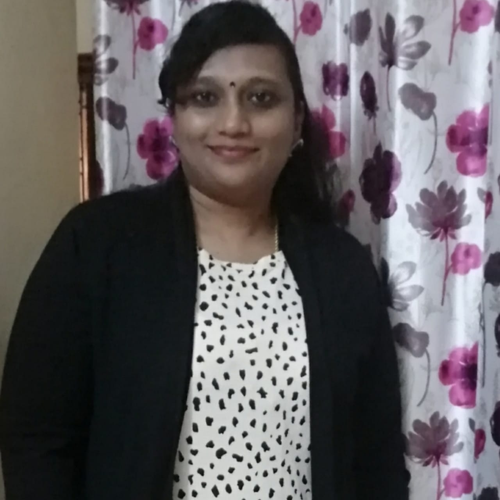

Particle Bed 3D-Printing Technique
Adarsh K Tiwari
CE19S026
DR.Phanisri
Structural Engineering
Utilisation of biomass ash in construction industry
Nilakanmani M
CE19D038
Dr. Piyush Chaunsali and Dr. Manu Santhanam
Building Technology and Construction Management

Traffic State Estimation and Prediction using Wi-Fi sensors
Abirami Krishna A
CE18D012
Dr. Bhargava Rama Chilukuri
Transportation Engineering

A Coupled SWAT-AEM modelling framework for a Comprehensive Hydrologic Assessment
Sangeetha Kumar
CE12D018
Dr. Balaji Narasimhan
Water Resources Engineering